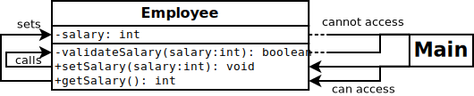
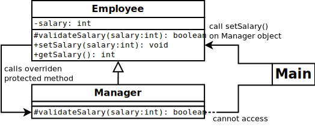

Java Access Modifiers
All objects have a public face, which others can interact with, and
private inner workings, which others should never touch. Access
modifiers are used to enforce how an object's members can be
interacted with and by whom. These keywords are integral to
encapsulating an object's functionality and enforcing, and thus are
commonly used in Java and other object-oriented languages.
The Java access modifiers are public, private,
protected, and
package-private, which applies when no access modifier is explicitly
stated. These keywords can be applied any class members, whether
attributes or methods; public and package-private can also be
applied to classes.
Public vs. Private
Only members marked public can be interacted with by the outside
world. These methods and attributes are those which we want other
classes to know about, and to use when interacting with the object.
private members are hidden from the outside world, and accessing
them from other classes results in a compile-time error. Privacy is
often used to hide implementation details, i.e. the functionality that
a class needs to do its job, but that others do not need to know
about.
In object-oriented programming (OOP), it is considered best practice
to make everything as private as possible. This manages complexity by
limiting the number of ways classes can interact. This is the notion
of encapsulation.
Example: Employee
Consider a class, Employee. The application interacts with
Employees only by getting or setting their salaries. There are two
ways to design this:
- Expose a
salary attribute, which others can set or get
directly.
- Expose
getSalary and setSalary methods.
The difference is subtle. The first approach allows direct access
into the employee's salary, while the second allows Employee to
control how the setting or getting happens. For example, in
setSalary, we can first check the salary is valid via
validateSalary; this type of validation cannot be done within
Employee in the simpler approach.

In the OOP approach, all attributes are private. To interact with
salary, the application must use the public getSalary and
setSalary methods (+ signs).
The validateSalary method is also private. As it only exists to
support the public functionality of Employee, and hence is only
relevant to Employee, it does not need to be accessed anywhere else.
Private members are not completely inaccessible to the outside world,
but can only be accessed indirectly through the public functions.
The code:
public class Employee {
private int salary;
public int getSalary() {
return salary;
}
public void setSalary(int s) {
if (validateSalary(s))
salary = s;
}
private boolean validateSalary(int s) {
return s >= 0;
}
}
Package Private and Protected
Having no access modifiers on a member makes in package-private,
which means that the member is public to all classes within the same
package, but private to everything outside of it.
Package-private is generally considered bad form, as there are few
use-cases for it.
protected members are package-private members which are passed on to
subclasses. Actual private members are hidden even from
subclasses, and do not get inherited.
In some situations though, it may be more elegant (though probably
poor OOP) to inherit private methods from a parent. For example, if
we have multiple employees (say, a manager), and each has a different
method of validating salary, then it may make sense to override
validateSalary in the manager class.

In this UML diagram, validateSalary is changed to be protected,
and is overriden by the subclass Manager. Now, setting the salary
for a Manager is done as follows:
- Call
setSalary on a Manager object
- This calls
Employee's setSalary method
setSalary calls the overriden validateSalary in Manager.
This strategy introduces stronger dependencies between the two classes
than would otherwise be present if Manager were merely subclassing
Employee. For this reason, protected is generally avoided and
considered bad OO practice.
The code (must change setSalary to protected in Employee):
class Manager extends Employee {
protected boolean validateSalary(int s) {
return s > 40000;
}
}
Members and Classes
There are two types of class members: attributes and methods.
Attributes are almost always private, as they are considered
implementation details. How methods are affected by access modifiers
are summarized below:
| Accessible from... |
Class |
Package |
Subclasses |
Everywhere |
public |
Y |
Y |
Y |
Y |
protected |
Y |
Y |
Y |
N |
| (default) |
Y |
Y |
N |
N |
private |
Y |
N |
N |
N |
The access modifiers public and package-private can also apply to
classes and interfaces (private and protected make little sense in
this context). This just specifies whether the class or interface can
be used from outside a package or not.